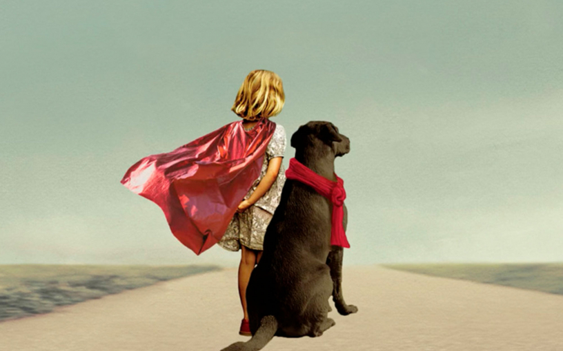

Книги, про які говорять: «Бабуся веліла кланятися і передати, що вибачається»
учора о 8:32

Для більшості з нас бабуся – щось зрозуміле, невід'ємна частина дитинства. А тим часом інститут бабусь у живій природі – скоріше виняток із правил. Окрім людей, бабусі є лише у косаток та дельфінів-грінд: у зграях вони допомагають дочкам виховувати своїх онуків та правнуків.
Тож бабусі – унікальне явище. А головна героїня книги «Бабуся веліла кланятися і передати, що вибачається», другого роману Фредріка Бакмана, – унікальне явище у квадраті. Погодьтеся, не кожна бабуся, перебуваючи в здоровому глузді та тверезій пам'яті, втече посеред ночі з лікарні, щоб пробратися до зоопарку. Або ганятиме на старенькому авто, хоча водійських прав у неї зроду не було. Але саме така бабуся дісталася семирічної Ельсі, і Ельса переконана, що їй неймовірно пощастило. Бабуся все життя пропрацювала хірургом в організації «Лікарі без кордонів», рятувала людей у всьому світі, але вийшла на пенсію, щоб зайнятися вихованням онуки.
Щоночі бабуся з Ельсою вирушають у Просоння – дивовижну країну, де час вимірюється вічностями та казками і ніхто не повинен бути «нормальним». Якось бабуся йде в Просонні назавжди, залишаючи Ельсі лише листи. Їх треба передати тим, у кого бабуся хоче вибачитися за свої помилки. Ельсе доведеться дізнатися, що герої та чудовиська живуть не тільки в казкових королівствах.
У книзі «Бабуся веліла кланятися і передати...» Бакман об'єднав казку, мелодраму, роман про дорослішання – і притчу, як ясно ближче до фіналу. А ще це своєрідна данина поваги Астрід Ліндгрен, у коханні до творчості якої Бакман зізнавався неодноразово. За його словами, працюючи над образом бабусі, він намагався уявити, якою стала б Пеппі Довгапанчоха, яка подорослішала. Звідси її божевільність, ексцентричність та величезна внутрішня сила. А в Просонні досвідчений читач легко розгляне схожість з Нангіялою з повісті «Брати Левине Серце» (кращої книги для того, щоб говорити з дітьми про смерть, як вважає Бакман). Втім, не варто звинувачувати бабусю в безсовісному запозиченні - її Просоня цілком самобутньо, в ньому знайшлося місце і дивовижним хмарам, і страшним Тіням, і лицарю Вовче серце, і дивним звірам ворсам, які захищають принцес, а якщо вмирають, то від горя.
Разом з Ельсою читачі шукатимуть адресатів бабусиних листів та відкриватимуть справжній зміст її казок. Не завжди ці відкриття будуть приємними – іноді серце стискатиметься від болю, іноді від страху. А іноді ви будете сміятися до сліз. Тому що Бакман – явище не менш унікальне, ніж бабуся. Він вміє про найскладніші речі писати з дивовижним тактом і добрим гумором, не вантажить читачів великоваговою мораллю і не соромиться повертати міцне слівце (бо «пекти плюшки – справа серйозна, це вам не в тапки срать»). Все це робить «Бабусю…» ідеальним передноворічним читанням у холодному грудні, коли кожному з нас потрібне дороговказ у вікні будинку, де пахне кавою та розповідають казки.
Сподобався матеріал? Також вас може зацікавити «Що ще почитати: як "Друге життя Уве"».
Дивитись більше